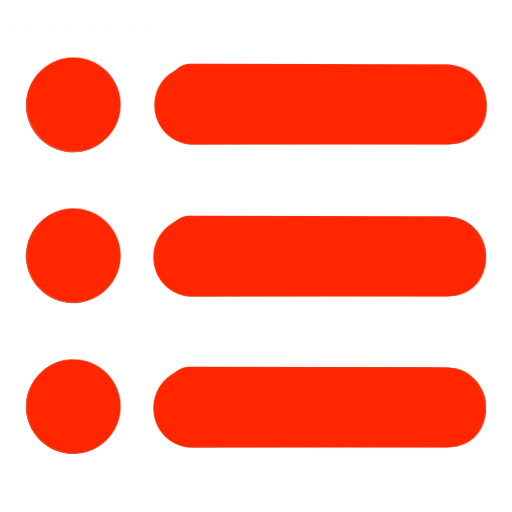

About Us
About Us

About Us

Serona:(Serena+Corona)
Serona is a 13 year old Rabbit from Mars. She is a girl and she like dog.
Her favorite color is light-blue and light-blue. She is insulted by Carona so the website have no blue.
Carona:(Carolyn+Corona)
Carona is a 12 year old 😢 cucumber from Taiwan. She is organic and loves cucumbers and cacti.
Her favorite colours are red and green, and that's why our website is red and green.